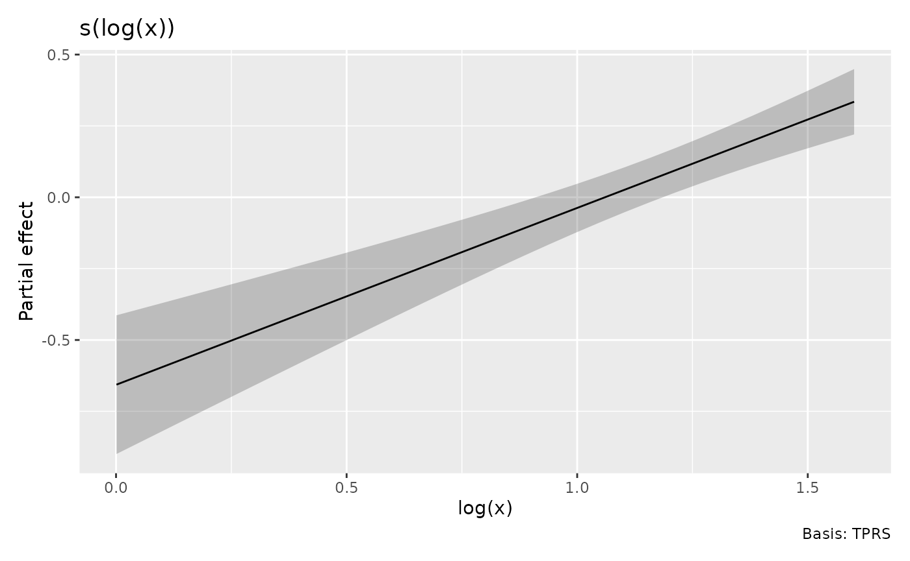
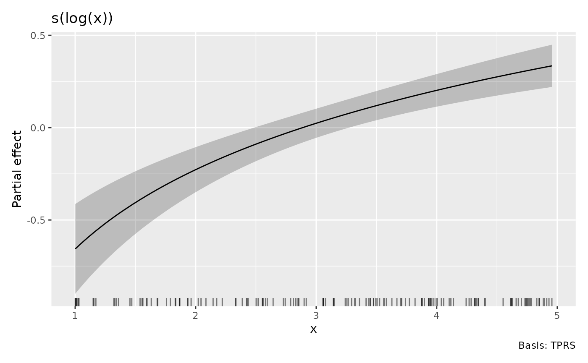
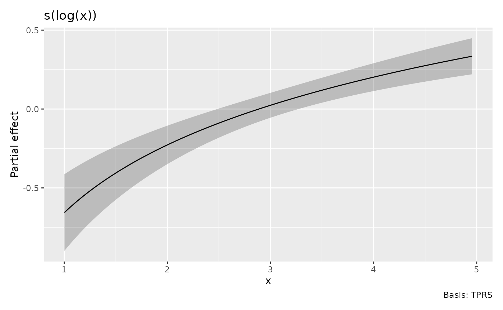
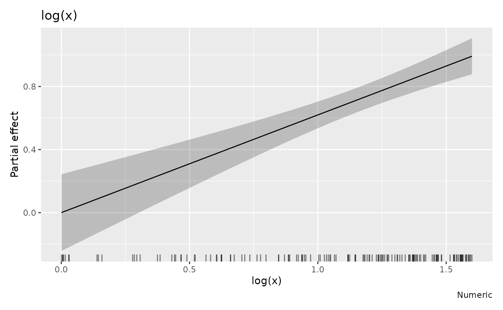
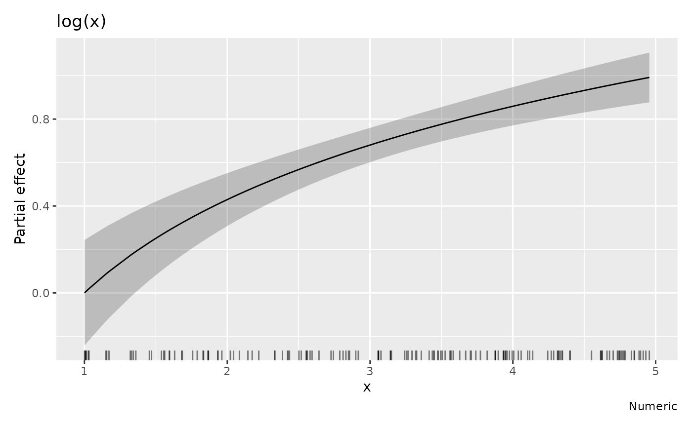
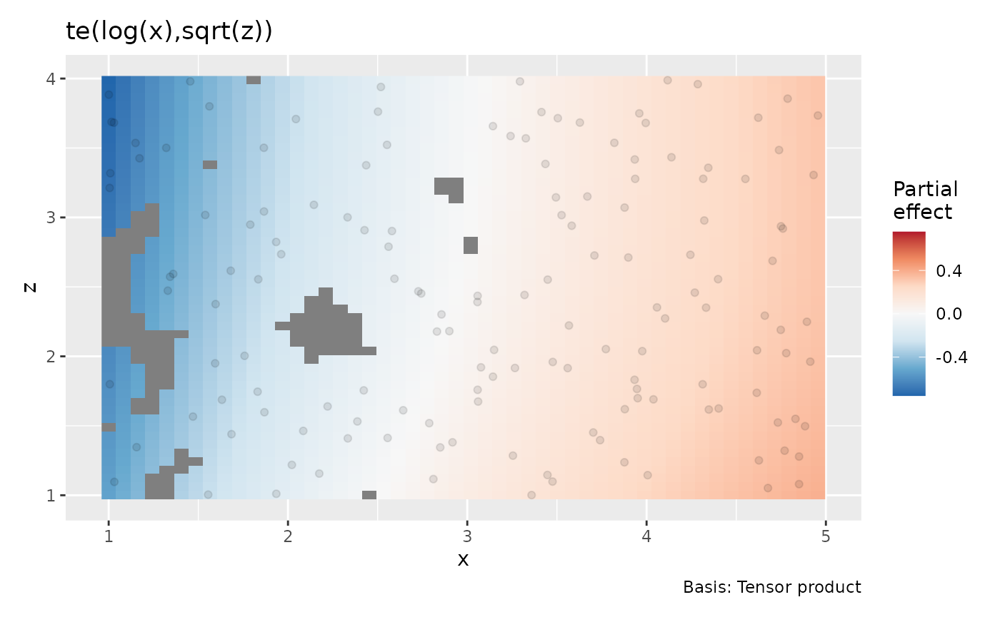
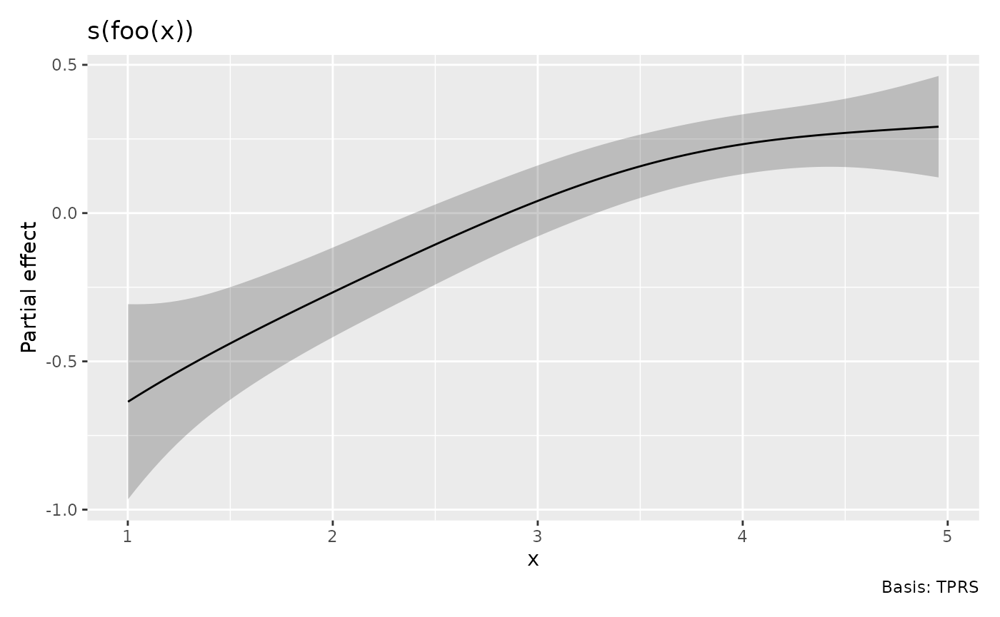

Predictions, plots and derivatives with transformed covariates
Source:vignettes/transformed-covariates.Rmd
transformed-covariates.RmdA model fitted with s(log(x)) uses a transformed
covariate, but we may want to predict at supplied values of
x, plot the result against x, or estimate
change per unit of x. This vignette shows how to make those
choices while keeping the model’s transformation intact.
We load {gratia} and {mgcv} for the examples:
Fit a count model with a transformed covariate and an effort offset
We simulate independent Poisson counts. The rate per unit of effort
varies nonlinearly with log(x), and multiplying that rate
by effort gives each observation’s expected count. Thus, twice the
effort gives twice the expected count at the same value of
x.
set.seed(42)
dat <- data.frame(x = runif(150, 1, 5), effort = runif(150, 1, 3))
dat$y <- rpois(nrow(dat), dat$effort * exp(sin(log(dat$x))))With a log link, the multiplicative effort term becomes an additive
offset(log(effort)). We fit a smooth of log(x)
to estimate the remaining variation in the log expected count:
Predict at values of the original covariates
Supply the original x and effort values
when predicting at new observations; gratia evaluates their
transformations. Here we hold effort at two units and compare the
contribution of the smooth with the complete fitted mean.
smooth_estimates() needs only x, whereas
fitted_values() also needs the effort offset:
nd <- data.frame(x = seq(1.2, 4.8, length.out = 8), effort = 2)
smooth_estimates(m, data = nd["x"])
#> # A tibble: 8 × 7
#> .smooth .type .by .estimate .se `log(x)` .gratia_raw_x
#> <chr> <chr> <chr> <dbl> <dbl> <dbl> <dbl>
#> 1 s(log(x)) TPRS NA -0.544 0.107 0.182 1.2
#> 2 s(log(x)) TPRS NA -0.323 0.0748 0.539 1.71
#> 3 s(log(x)) TPRS NA -0.160 0.0543 0.801 2.23
#> 4 s(log(x)) TPRS NA -0.0318 0.0428 1.01 2.74
#> 5 s(log(x)) TPRS NA 0.0747 0.0396 1.18 3.26
#> 6 s(log(x)) TPRS NA 0.166 0.0425 1.33 3.77
#> 7 s(log(x)) TPRS NA 0.245 0.0487 1.46 4.29
#> 8 s(log(x)) TPRS NA 0.315 0.0561 1.57 4.8
fitted_values(m, data = nd)
#> # A tibble: 8 × 8
#> .row x effort .parameter .fitted .se .lower_ci .upper_ci
#> <int> <dbl> <dbl> <chr> <dbl> <dbl> <dbl> <dbl>
#> 1 1 1.2 2 mean 2.51 0.107 2.03 3.09
#> 2 2 1.71 2 mean 3.13 0.0748 2.70 3.62
#> 3 3 2.23 2 mean 3.68 0.0543 3.31 4.09
#> 4 4 2.74 2 mean 4.18 0.0428 3.85 4.55
#> 5 5 3.26 2 mean 4.65 0.0396 4.31 5.03
#> 6 6 3.77 2 mean 5.10 0.0425 4.69 5.54
#> 7 7 4.29 2 mean 5.52 0.0487 5.01 6.07
#> 8 8 4.8 2 mean 5.92 0.0561 5.30 6.61Without supplied prediction data, smooth_estimates()
creates an evenly spaced grid on the scale used in the smooth: here,
log(x). We can plot the estimated contribution directly on
that scale:
sm <- smooth_estimates(m, n = 30)
draw(sm)
If you already have values on the transformed scale, supply a column
named exactly as it appears in the model, here log(x):
evaluated <- data.frame(`log(x)` = log(nd$x), check.names = FALSE)
smooth_estimates(m, data = evaluated)
#> # A tibble: 8 × 6
#> .smooth .type .by .estimate .se `log(x)`
#> <chr> <chr> <chr> <dbl> <dbl> <dbl>
#> 1 s(log(x)) TPRS NA -0.544 0.107 0.182
#> 2 s(log(x)) TPRS NA -0.323 0.0748 0.539
#> 3 s(log(x)) TPRS NA -0.160 0.0543 0.801
#> 4 s(log(x)) TPRS NA -0.0318 0.0428 1.01
#> 5 s(log(x)) TPRS NA 0.0747 0.0396 1.18
#> 6 s(log(x)) TPRS NA 0.166 0.0425 1.33
#> 7 s(log(x)) TPRS NA 0.245 0.0487 1.46
#> 8 s(log(x)) TPRS NA 0.315 0.0561 1.57If both x and log(x) are supplied, gratia
computes the transformation from x. To build a grid on the
original scale, use data_slice() with the original fitting
data. The following call creates eight evenly spaced x
values while holding effort at two:
data_slice(m, x = evenly(x, n = 8), effort = 2, data = dat)
#> # A tibble: 8 × 2
#> x effort
#> <dbl> <dbl>
#> 1 1.00 2
#> 2 1.57 2
#> 3 2.13 2
#> 4 2.70 2
#> 5 3.26 2
#> 6 3.83 2
#> 7 4.39 2
#> 8 4.96 2Plot against the original covariates
Drawing methods use the model’s covariate coordinates by default. For
example, log(x) is plotted against log(x),
with a matching axis label, whether it is inside a smooth or a
parametric term. Set back_transform = TRUE to display
x instead. The estimated smooth contribution remains on the
model’s linear predictor scale. The following calls request an axis in
the original units, first from the fitted model and then from saved
smooth estimates.
draw(m, back_transform = TRUE)
sm_raw <- smooth_estimates(m, back_transform = TRUE)
draw(sm_raw, back_transform = TRUE)
The same option works for transformed covariates in parametric terms.
We fit a Poisson model with a linear effect of log(x) and
the same effort offset. Plot the effect against log(x) and
x, then make the plot in the original units using the
output of parametric_effects().
m_parametric <- gam(y ~ log(x) + offset(log(effort)),
family = poisson(), data = dat)
draw(m_parametric)
draw(m_parametric, back_transform = TRUE)
pe <- parametric_effects(m_parametric)
draw(pe, back_transform = TRUE)
For a surface, back_transform = TRUE changes both
displayed axes. To illustrate this, we add an independent covariate
z and fit a tensor-product smooth using log(x)
and sqrt(z). The simulated counts still depend only on
x and effort; z supplies a second axis for
this display example:
Fit a smooth over the transformed coordinates, then request original-scale axes for both covariates when drawing it.
m_surface <- gam(y ~ te(log(x), sqrt(z)) + offset(log(effort)), family = poisson(),
data = dat_surface, method = "REML")
draw(m_surface, back_transform = TRUE, contour = FALSE)
back_transform = TRUE also changes where a smooth is
evaluated when the grid is generated automatically. For example,
consider s(log(x)) with x ranging from 1 to
100. By default, three equally spaced points on the log scale correspond
to 1, 10 and 100 in the original units. With
smooth_estimates(..., back_transform = TRUE), the same grid
size gives 1, 50.5 and 100 in the original units. The smooth is
evaluated at the logs of these values.
draw(m, back_transform = TRUE) prepares this grid
automatically.
Precomputed estimates retain their chosen evaluation points. An
object created on a transformed-only grid cannot be drawn on the
original scale: its raw coordinates are unavailable. Recompute it with
back_transform = TRUE, or supply original covariate values
through data when calculating the estimates.
Use your own transformation functions
The transformation need not be named log() or
sqrt(). Each smooth axis must depend on one distinct
original model covariate, and the transformation must be available when
calculating predictions. Here foo() is another name for
sqrt(); we supply its environment through
envir:
foo <- sqrt
m_foo <- gam(y ~ s(foo(x), k = 6), family = poisson(), data = dat)
sm_foo <- smooth_estimates(m_foo, back_transform = TRUE, envir = environment())
draw(sm_foo, back_transform = TRUE)
Keep the original fitting data and transformation functions available
when creating automatic original-scale grids. If the fitting data are
unavailable, supply prediction rows in data; if a function
or constant is missing, supply its environment in envir.
Saved estimates can then be plotted without evaluating the
transformation again. Rugs and partial residuals require the original
observations and are omitted when those observations cannot be
recovered.
Soap-film boundary coordinates are stored on the model scale. A
transformed boundary has no retained raw coordinates, so raw-scale
drawing raises an error. Draw these soap films with
back_transform = FALSE to retain their boundaries.
The old parametric_effects(transform = ...) argument is
deprecated. Replace transform = TRUE with
back_transform = FALSE, and transform = FALSE
with back_transform = TRUE.
Preserve functions defined inside a model-fitting function
A fitted model may retain the formula expression without retaining
the local environment in which it was evaluated. In the example below,
transform_x() needs the local constant shift.
We return the fitted model and that environment together, then use
envir when predicting at new observations:
fit_local <- function(dat) {
shift <- 0.5
transform_x <- function(x) log(x + shift)
f <- y ~ s(transform_x(x), k = 6) + offset(log(effort))
list(model = gam(f, family = poisson(), data = dat, method = "REML"),
envir = environment(f))
}
bundle <- fit_local(dat)
smooth_estimates(bundle$model, data = nd, envir = bundle$envir)
#> # A tibble: 8 × 7
#> .smooth .type .by .estimate .se `transform_x(x)` .gratia_raw_x
#> <chr> <chr> <chr> <dbl> <dbl> <dbl> <dbl>
#> 1 s(transform_x(x)) TPRS NA -0.543 0.113 0.531 1.2
#> 2 s(transform_x(x)) TPRS NA -0.329 0.0772 0.795 1.71
#> 3 s(transform_x(x)) TPRS NA -0.164 0.0607 1.00 2.23
#> 4 s(transform_x(x)) TPRS NA -0.0295 0.0511 1.18 2.74
#> 5 s(transform_x(x)) TPRS NA 0.0802 0.0451 1.32 3.26
#> 6 s(transform_x(x)) TPRS NA 0.170 0.0440 1.45 3.77
#> 7 s(transform_x(x)) TPRS NA 0.244 0.0497 1.57 4.29
#> 8 s(transform_x(x)) TPRS NA 0.308 0.0619 1.67 4.8
fitted_values(bundle$model, data = nd, envir = bundle$envir)
#> # A tibble: 8 × 8
#> .row x effort .parameter .fitted .se .lower_ci .upper_ci
#> <int> <dbl> <dbl> <chr> <dbl> <dbl> <dbl> <dbl>
#> 1 1 1.2 2 mean 2.51 0.113 2.01 3.13
#> 2 2 1.71 2 mean 3.11 0.0772 2.67 3.62
#> 3 3 2.23 2 mean 3.67 0.0607 3.26 4.13
#> 4 4 2.74 2 mean 4.19 0.0511 3.79 4.64
#> 5 5 3.26 2 mean 4.68 0.0451 4.28 5.11
#> 6 6 3.77 2 mean 5.12 0.0440 4.70 5.58
#> 7 7 4.29 2 mean 5.51 0.0497 5.00 6.08
#> 8 8 4.8 2 mean 5.88 0.0619 5.21 6.64New predictions require the original definition of
transform_x() and the same value of shift.
Retaining bundle$envir makes both available after
fit_local() has returned.
Choose whether derivatives describe change in x or
log(x)
For a contribution f(\log x), the
default derivative is with respect to \log
x. Set wrt = "covariate" to differentiate with
respect to x instead. The latter
includes the chain-rule factor 1/x. We
compare both derivatives at the prediction rows created earlier. Both
describe change in the smooth’s contribution to the log expected count;
use response_derivatives() for change in the complete
response mean.
derivatives(m, data = nd, type = "central")
#> # A tibble: 8 × 9
#> .smooth .by .fs .derivative .se .crit .lower_ci .upper_ci `log(x)`
#> <chr> <chr> <chr> <dbl> <dbl> <dbl> <dbl> <dbl> <dbl>
#> 1 s(log(x)) NA NA 0.620 0.101 1.96 0.422 0.817 0.182
#> 2 s(log(x)) NA NA 0.620 0.100 1.96 0.423 0.817 0.539
#> 3 s(log(x)) NA NA 0.620 0.100 1.96 0.423 0.816 0.801
#> 4 s(log(x)) NA NA 0.620 0.100 1.96 0.423 0.816 1.01
#> 5 s(log(x)) NA NA 0.620 0.100 1.96 0.423 0.816 1.18
#> 6 s(log(x)) NA NA 0.620 0.100 1.96 0.423 0.816 1.33
#> 7 s(log(x)) NA NA 0.619 0.101 1.96 0.422 0.816 1.46
#> 8 s(log(x)) NA NA 0.619 0.101 1.96 0.422 0.817 1.57
derivatives(m, data = nd, type = "central", wrt = "covariate")
#> # A tibble: 8 × 9
#> .smooth .by .fs .derivative .se .crit .lower_ci .upper_ci x
#> <chr> <chr> <chr> <dbl> <dbl> <dbl> <dbl> <dbl> <dbl>
#> 1 s(log(x)) NA NA 0.516 0.0839 1.96 0.352 0.681 1.2
#> 2 s(log(x)) NA NA 0.361 0.0586 1.96 0.247 0.476 1.71
#> 3 s(log(x)) NA NA 0.278 0.0450 1.96 0.190 0.366 2.23
#> 4 s(log(x)) NA NA 0.226 0.0366 1.96 0.154 0.298 2.74
#> 5 s(log(x)) NA NA 0.190 0.0308 1.96 0.130 0.251 3.26
#> 6 s(log(x)) NA NA 0.164 0.0266 1.96 0.112 0.216 3.77
#> 7 s(log(x)) NA NA 0.145 0.0235 1.96 0.0986 0.191 4.29
#> 8 s(log(x)) NA NA 0.129 0.0209 1.96 0.0880 0.170 4.8Differentiate a surface with respect to one covariate
For a surface, partial_derivatives() varies the
coordinate named in focal while holding the other
coordinates fixed. wrt chooses the scale of that
coordinate. For example, te(log(x), sqrt(z)) represents a
contribution f(\log x, \sqrt z), with
the following choices:
| Arguments | Derivative |
|---|---|
wrt = "smooth", focal = "log(x)" |
With respect to \log x, holding \sqrt z fixed |
wrt = "covariate", focal = "x" |
With respect to x, holding z fixed |
We simulate a Gaussian response with mean
sin(log(x)) * sqrt(z). The positive covariates are sampled
independently, and independent Gaussian errors have standard deviation
0.1.
set.seed(43)
tensor_dat <- data.frame(x = runif(150, 1, 5), z = runif(150, 1, 3))
tensor_dat$y <- sin(log(tensor_dat$x)) * sqrt(tensor_dat$z) +
rnorm(nrow(tensor_dat), sd = 0.1)We fit a tensor-product smooth using the transformed covariates to estimate that surface:
Next, we hold z at two and vary x. We
calculate derivatives with respect to log(x) and
x, then compare the latter with the chain-rule
calculation:
# Vary x along a slice with z held fixed.
tensor_nd <- data.frame(x = seq(1.2, 4.8, length.out = 8), z = 2)
pd_smooth <- partial_derivatives(tensor_model, data = tensor_nd,
wrt = "smooth", focal = "log(x)", type = "central")
pd_covariate <- partial_derivatives(tensor_model, data = tensor_nd,
wrt = "covariate", focal = "x", type = "central")
# Compare the raw-covariate derivative with the chain-rule calculation.
data.frame(x = tensor_nd$x,
covariate_derivative = pd_covariate$.partial_deriv,
smooth_derivative_over_x = pd_smooth$.partial_deriv / tensor_nd$x)
#> x covariate_derivative smooth_derivative_over_x
#> 1 1.200000 1.10743950 1.10743950
#> 2 1.714286 0.70406919 0.70406919
#> 3 2.228571 0.46255744 0.46255744
#> 4 2.742857 0.30372264 0.30372264
#> 5 3.257143 0.19160164 0.19160164
#> 6 3.771429 0.11442885 0.11442885
#> 7 4.285714 0.07550389 0.07550389
#> 8 4.800000 0.05874753 0.05874753The first call estimates the derivative from small changes in
log(x). The second makes small changes in x
and recalculates log(x) before evaluating the smooth. The
chain rule gives the relationship \partial f /
\partial x = (\partial f / \partial \log x) / x, up to
finite-difference approximation error.
For this surface, use focal = "x" or "z"
with wrt = "covariate", and supply the original covariate
values in data. Keep the other covariate fixed to describe
change along a particular slice, as we did with z = 2. The
default wrt = "smooth" selects the first numeric smooth
coordinate if focal is omitted. Naming it explicitly makes
the intended derivative clear. For an untransformed coordinate, such as
x in te(x, z), both values of wrt
give the same interpretation.
Choosing a finite-difference step
The derivative functions use eps = NULL by default to
choose a step from the fitted range of the differentiation coordinate.
This is the range of log(x) when differentiating on that
smooth coordinate, or of x when using
wrt = "covariate". The step therefore follows changes in
the covariate’s units and normally stays the same when prediction data
are split into batches.
Start with this default. If estimates appear unstable, supply a
positive absolute eps in the units of the coordinate being
differentiated. For example, eps = 1e-4 with
wrt = "covariate" sets the step in units of x.
Compare estimates using half and twice the chosen step: very small steps
can amplify rounding errors, while large steps give a poorer local
approximation. Near a transformation’s domain boundary, choose a step
and difference type that keep the evaluation points inside the domain.
The FiniteDiff
step-size discussion explains this balance.